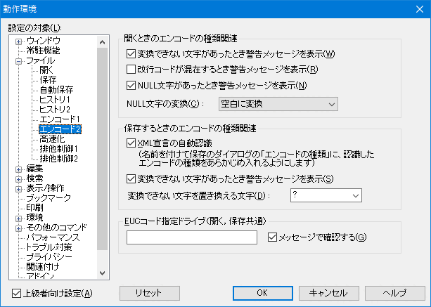

- 秀丸エディタで複数の漢字コードを使い分けたいのですがどうすればいいでしょうか?

秀丸エディタは、デフォルトでエンコードの自動判別が有効になっています。しかし、自動判定で、全てのエンコードを間違いなく判定する保証はないです。
特定のエンコードを使う場合は種々の方法が存在します。
自動判定を有効にする。
「その他」→「動作環境」→「ファイル」→「エンコード1」→「自動判定で開くとき」で、「ファイルの内容を解析してエンコードの種類を自動認識する」をONにして下さい。
(「エンコード1」が表示されていない場合は、「動作環境」画面左下にある「上級者向け設定」をONにしてください)使用状況に合わせ、エンコードの優先度を変更したり、新規作成時のエンコードの指定も出来ます。

ファイルを開くときに明示的に文字コードを指定する。
メニューの「ファイル」→「開く」等のダイアログで、「文字コード」で正しい文字コードを指定します。
ファイルのエンコードを指定したショートカットを利用する。
ショートカットの作成方法は、テキスト編集を極める！！ 起動オプションを使ってみようを参照してください。
(EUCコードの場合のみ)保存するフォルダを決めておく。
秀丸エディタの「その他」→「動作環境」→「ファイル」→「エンコード2」にある、「EUCコードの指定ドライブ」の欄にドライブを指定し、EUCコードのファイルはそこに保存する。

ファイルの先頭に、文字コードを記述しておく
ファイルの先頭に、文字コードを記述しておく方法もあります。ただし、「ファイルタイプ別の設定」で、判定を有効にしておく必要があります。
「その他」−「保存・読込み」にある「エンコードの種類の指定」で「自動判定で開くときconfig等のコメントの認識」のチェックをONにします。
チェックを入れた状態で、ファイルの先頭に、決められた書式を記述しておくと。文字コードを指定できます。指定方法は2通りあります。
書式その１
行の先頭に
"#"、次に"encoding:"、次に文字コードを示す文字列(utf-8|shift_jis|jis|ecu-jp等)を指定します。# encoding: utf-8- 各項目間にスペースを入れても問題ありません。 (
#の前にスペースを入れるのはダメ) encodingの後は、":"だけではなく、"="でもいいです。 (encodingとその後の文字(":"または"=")との間に、スペースを入れてはいけません)
- 各項目間にスペースを入れても問題ありません。 (
書式その２
行の先頭に
"#"、次に"-*-"、次に"coding:"、次に文字コードを示す文字列、最後に"-*-"を指定します。# -*- coding: utf-8 -*-最初の
"-*-"の後、最後の"-*-"の前には、スペースを入れてください。(タブは使用しないこと)以下の書式では認識しない
# -*-coding: utf-8-*-codingの後は、":"だけではなく、"="でもいいです。 (codingとその後の文字(":"または"=")との間に、スペースを入れてはいけません)
文字コードを記述する箇所は、ファイルの先頭から2行目までです。
C言語等の場合は、そのまま記述するとコンパイル時にエラーになるため、コメント文字を利用します。(使用する言語のブロックコメントで囲んでください)
/* # coding: utf-8 */